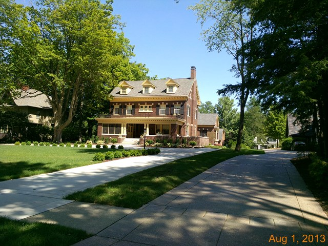

1318 E. Washington

- W. Gordon and Emily Coles Residence. Cole was a large land owner in McLean County
- Colonial revival, center hall layout
- Federal style window headers, classic temple form dormers
- Barn built in 194? from Pillsbury plans. Recent re-hab by Russel Francois